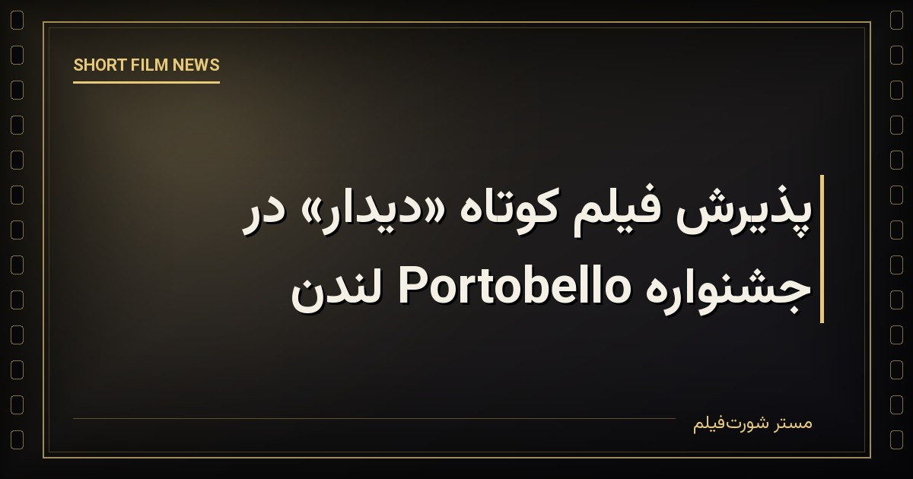

مسیر بینالمللی فیلم کوتاه «دیدار» با پذیرش این اثر در جشنواره فیلم Portobello در لندن ادامه یافت. این جشنواره که در پایتخت بریتانیا برگزار میشود، هر ساله میزبان آثار کوتاه متنوعی از فیلمسازان مستقل کشورهای مختلف است.\n\nحضور پیاپی «دیدار» در دو جشنواره اروپایی ظرف مدت کوتاهی، نمونهای از روند رایج در مسیر نمایش فیلمهای کوتاه ایرانی است؛ روندی که در آن یک اثر مستقل، پس از نخستین پذیرش بینالمللی، معمولاً به فهرست جشنوارههای بیشتری در کشورهای گوناگون راه مییابد و بهتدریج مخاطبان تازهای در سطح جهانی پیدا میکند.
منبع خبر: انجمن سینمای جوانان ایران